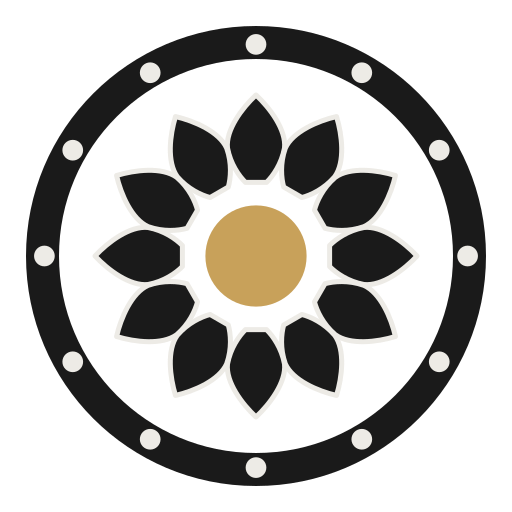

The reflection you asked for: the rejected palette coloured the brand like the architecture — lit stone, carved stone, night sky. That is why it read civic. Shaiva worship has its own palette: the substances that actually touch the Lord. The linga is black stone and the garbhagriha is dark — black is His colour, not an absence. The only light inside is the dipa flame — gold. Shiva wears bhasma — ash: your grey. The ghanta and the cast murti are kansya — bell-bronze; the abhisheka vessels are tamra — copper; the moon on His crown is the one white. Your liked list is this list. Retired from brand surfaces: indigo, teal, ivory-as-ground, sandstone panels. Below: the substance palette, its receipts, and four complete compositions judged on the surface you criticised.
Ash body, gold heart: the icon is vibhuti and flame on the sanctum dark — it can never blend into the ground again. Display type is the lamp (gold); reading text is the ash. One metal, one ash, one black: the quietest and the holiest.
Two metals: the corolla cast in kansya bell-bronze, the Lord in gold. Warmer and more ornamental than 1 — the temple's metalware register. Bronze stays at large sizes only (it is a 3.9:1 colour); ash still carries the reading text.

Websites and letters still need a light page — but chandra moon-paper, not chrome ivory: the yellow is gone, the panels are gone, charcoal ink does the work, copper is the only accent, gold appears once as the rule. The government-website beige dies here; day surfaces become a gallery wall for the mark.
The festival dress: the whole mark in dipa gold on the sanctum black — in print this is real gold foil on matte soft-touch black, the "finished" richness you named. Reserved for invitations, festival posters, the temple drum: if everything is gold, nothing is.
| surface | finish | gold becomes |
|---|---|---|
| city poster / invitation (ceremonial) | matte soft-touch black | hot-stamp gold foil (gloss against matte — the knife in material form) |
| street banner / flex | matte laminate | printed #C8A15A (foil not viable outdoors) |
| letterhead / receipts | uncoated chandra stock | printed #C8A15A, used once per page |
| embroidery | — | metallic gold thread on black or ash cloth |
Proposal: 1 GARBHAGRIHA leads the brand (all dark surfaces, city print, video); 3 BHASMA-DAY is the reading register (website body, documents); 4 KANAKA is festival dress; 2 GHANTA stands ready if you want the warmer two-metal voice instead of 1. Devanagari set live in vendored Tiro as simulation. Baking into colors.json v2 happens in Phase 3 after your pick.